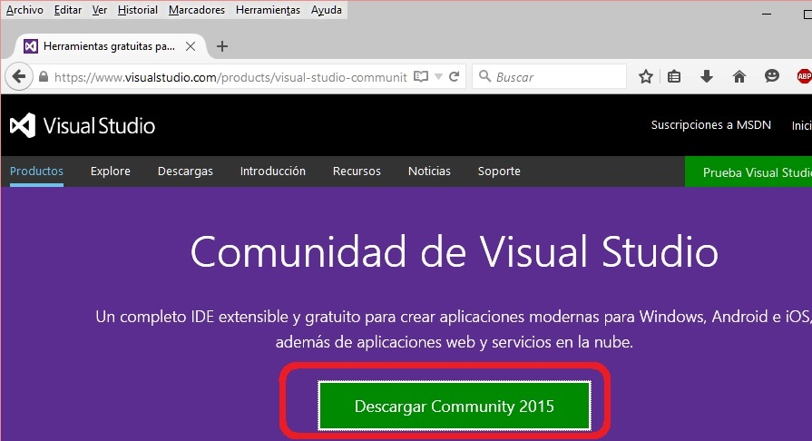
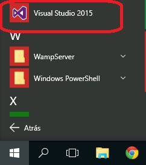
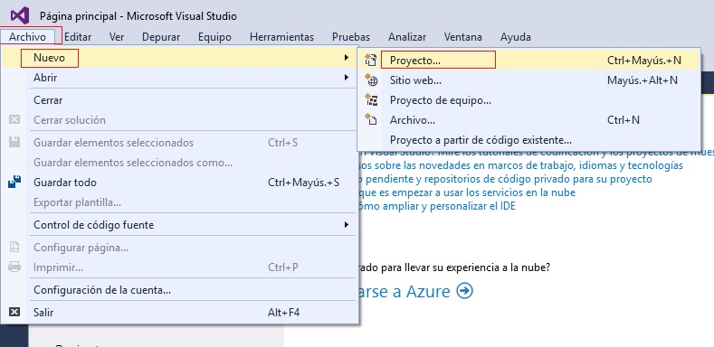
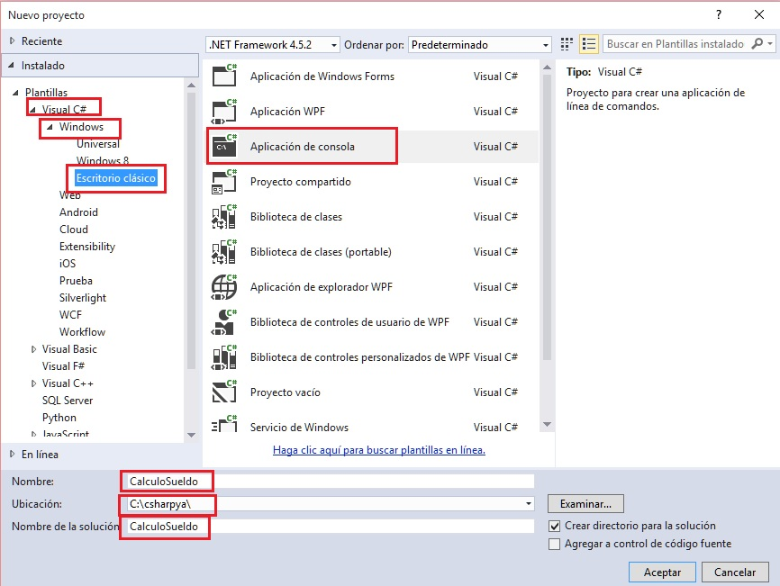
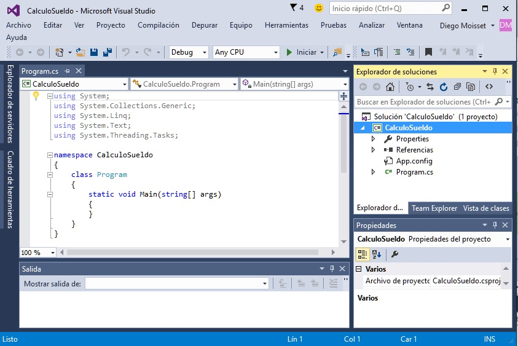
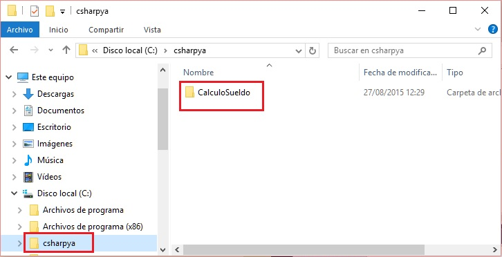

Descarga del entorno para programar con C#.
Podemos utilizar el Visual Studio Community que tiene entre otros lenguajes el C# y lo podemos descargar de aquí.. También si ya tiene instalado el Visual Studio 2013, 2012 o 2010 puede hacer este curso.
Codificación del problema con el lenguaje C#.
No debemos perder de vista que el fin último es realizar un programa de computación que permita automatizar una actividad para que muchos procesos sean desarrollados por la computadora.
El diagrama de flujo es un paso intermedio para poder ser interpretado por la computadora.
El paso siguiente es la codificación del diagrama de flujo en un lenguaje de computación, en nuestro caso emplearemos el lenguaje C#.
Lenguaje de computación: Conjunto de instrucciones que son interpretadas por una computadora para realizar operaciones, mostrar datos por pantalla, sacar listados por impresora, entrar datos por teclado, etc.
Conceptos básicos para codificar un programa.
Variable: Es un depósito donde hay un valor. Consta de un nombre y pertenece a un tipo.
Para el ejemplo planteado la variable HorasTrabajadas almacena la cantidad de horas trabajadas por el operario. La variable ValorHora almacena el precio de una hora de trabajo. La variable Sueldo almacena el sueldo a abonar al operario.
En el ejemplo tenemos tres variables.
Tipos de variable:
Una variable puede almacenar:
- Valores Enteros (100, 260, etc.)
- Valores Reales (1.24, 2.90, 5.00, etc.)
- Cadenas de caracteres ("Juan", "Compras", "Listado", etc.)
Elección del nombre de una variable:
Debemos elegir nombres de variables representativas. En el ejemplo el nombre HorasTrabajadas es lo suficientemente claro para darnos una idea acabada sobre su contenido. Podemos darle otros buenos nombres. Otros no son tan representativos, por ejemplo HTr. Posiblemente cuando estemos resolviendo un problema dicho nombre nos recuerde que almacenamos las horas trabajadas por el operario pero cuando pase el tiempo y leamos el diagrama probablemente no recordemos ni entendamos qué significa HTr.
Consideraciones a tener en cuenta en cada proyecto.
Hay que tener en cuenta que el entorno de programación "Microsoft Visual Studio" no ha sido desarrollado pensando en un principiante de la programación. Lo mismo ocurre con el propio lenguaje C#, es decir su origen no tiene como objetivo el aprendizaje de la programación. Debido a estos dos puntos veremos que a medida que avanzamos con el tutorial muchos conceptos que iremos dejando pendientes se irán aclarando.
Veremos los pasos para la creación de un proyecto en C#.
Pasos.
1 - Ingresemos al "Microsoft Visual Studio".

2 - Creación del proyecto. Para esto seleccionamos desde el menú la opción "Archivo" -> "Nuevo" -> "proyecto..."

Aparece un diálogo donde debemos indicar del lado izquierdo que utilizaremos el lenguaje Visual C#->Windows->Escritorio clásica, del lado de la derecha seleccionamos "Aplicación de consola" y en la parte inferior definimos el "nombre", "ubicación" y "nombre de la solución" (podemos usar el mismo texto para el "nombre de la solución" y "nombre"):

Podemos ver que el entorno nos generó automáticamente el esqueleto de nuestro programa:
3 - Si vamos al Explorador de archivos de windows podemos ver que tenemos creada la carpeta con nuestro programa:

4 - Una vez que finalizamos de trabajar con el proyecto lo cerramos desde el menú de opciones Archivo -> Cerrar solución: